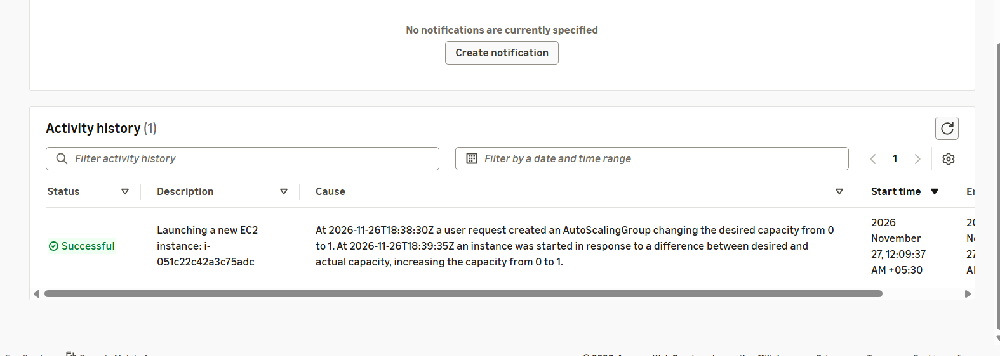
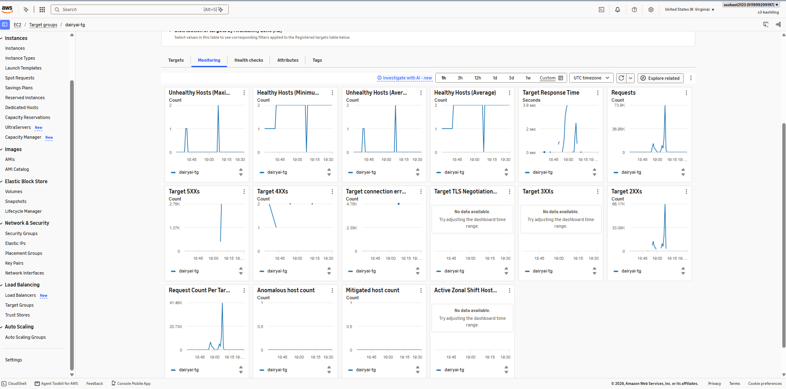
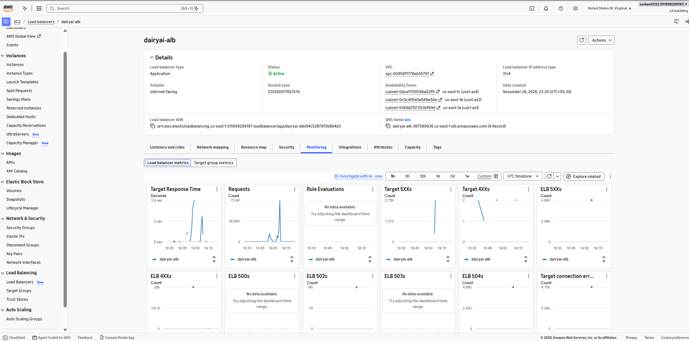
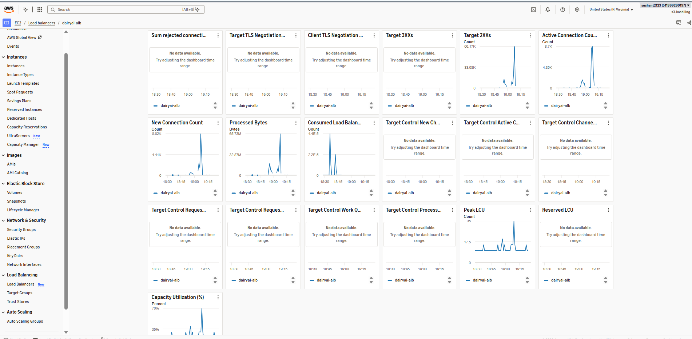
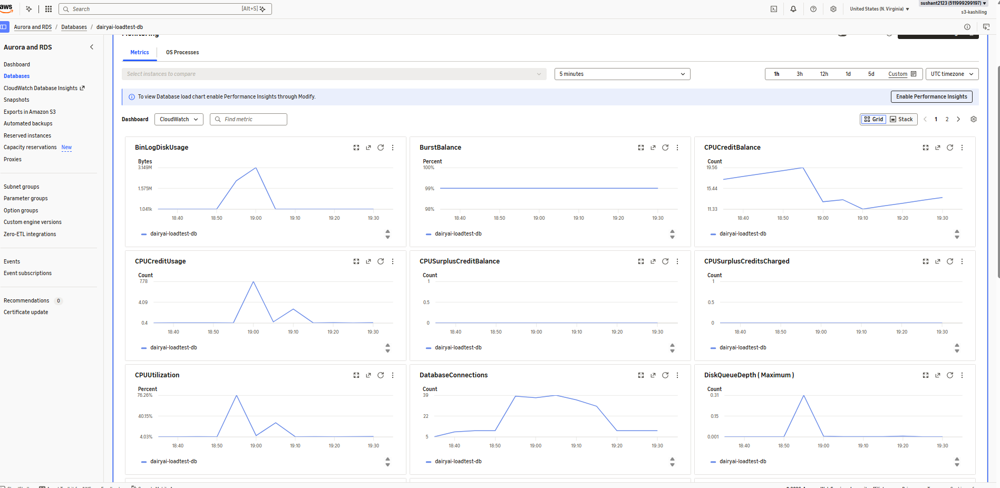
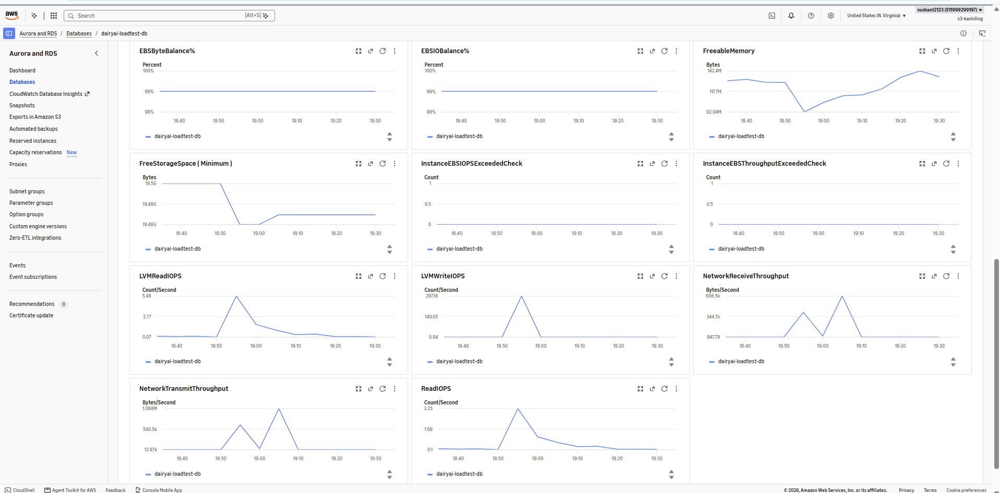

SmartDairy-Multi-tenant-System-
Test Environment (us-east-1):
dairyai-alb) across 3 AZs (us-east-1a, us-east-1b, us-east-1c)t3.small, Min 1 / Max 3, CPU 50% target) running NGINX (worker_connections 8192) + Spring Boot 3.3.5db.t4g.micro) + Redis (@Cacheable on rateCharts)m7i-flex.large EC2 running Apache JMeter 5.6.3 CLI| Test | Scenario | Total Requests | Avg Latency | Throughput | Error Rate | Raw Report |
|---|---|---|---|---|---|---|
| Test 1 | Mixed Read/Write (300 users, 60s ramp-up: 3 GET + 1 POST /api/milk-collections) |
34,492 | 1,848.9 ms (Min 6 ms) | 140.2 req/s | 0.00% | Open Report 1 |
| Test 2 | Staged 5,000 Users (120s ramp-up, 4 loops on Redis-cached GET /api/pricing-settings) |
20,000 | 10 ms (Min 5 ms) | 166.6 req/s | 0.00% | Open Report 2 |
| Test 3 | Extreme 15s Burst (5,000 users, 4,985 active simultaneously, 20 loops) |
100,000 | 2,681 ms (Min 1 ms) | 1,207.5 req/s (1,395.2 peak) | 8.27% (cold-start lag) | Open Report 3 |
JMeter Test Plans: test1_mixed.jmx | test2_5000.jmx
dairyai-asg)
dairyai-tg — Healthy Hosts 1 -> 2, 73.9K Requests)
dairyai-alb)

dairyai-loadtest-db)
